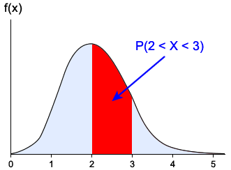
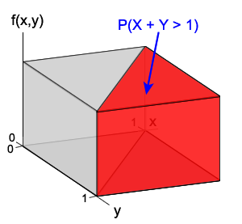

For any single continuous random variable, \(X\),
\[ P(X=x) \;=\; 0 \qquad \text{for all } x \]Events of interest correspond to ranges of values and probabilities are found as areas under a probability density function,

Probabilities as volumes
A similar result holds for a pair of two continuous random variables, \(X\) and \(Y\),
\[ P(X=x \textbf{ and } Y=y) \;=\; 0 \qquad \text{for all } x,y \]and events of interest correspond to ranges of values of the variables, such as
\[ P(1 \lt X \lt 2 \textbf{ and } Y \gt 4) \]Their probabilities are defined as volumes under a surface in three dimensions. For the two variables below, the shaded volume is the probability that \((X+Y)\) has a value greater than 1 and can be found by simple geometry to be ½.

Joint probability density function
This surface is called the variables' joint probability density function. It is often denoted by \(f(x,y)\) and defined by a mathematical formula. It must satisfy the following two properties:
Properties of probability functions
\[ f(x,y) \ge 0 \text{ for all } x, y \] \[ \iint\limits_{\text{all } x,y} f(x,y)\;dx\;dy = 1 \]The second requirement corresponds to the total volume under the joint probability density function being one. This is required because
\[ P(-\infty \lt X \lt \infty \textbf{ and } -\infty \lt Y \lt \infty) \]must be one since \(X\) and \(Y\) are certain to have values within these ranges.